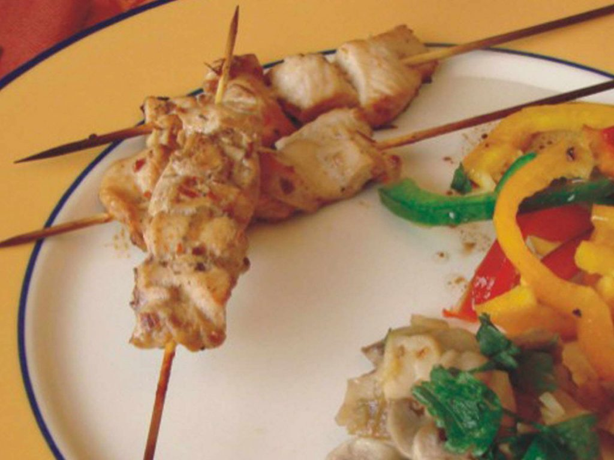

Anticuchos de pollo
1 porción (2 brochettes)
- ✔️ 150 g de pollo
- ✔️ 2 dientes de ajo
- ✔️ 1 cda. de romero
- ✔️ 1 cda. de orégano
- ✔️ 4 cdas. de vinagre
- ✔️ 3 cdas. de aceite
- ✔️ jugo de 1/2 limón
- ✔️ Jengibre fresco machacado
- ✔️ 1 cdita. de pimentón extradulce
- ✔️ 1 pizca de comino
- ✔️ Sal y pimienta
PROCEDIMIENTO
- □ Cortar el pollo en cubos de 2 x 2 cm aprox. Reservar.
- □ Aparte, en un bol, mezclar todos los condimentos.
- □ Colocar los trozos de pollo el bol con la mezcla.
- □ Dejar macerar en la heladera durante 3 o 4 hs.
- □ Luego, pinchar de a tres bocados en un palillo para brochette.
- □ Cocinar de un lado y otro en una plancha antiadherente o en la parrilla.
Se puede usar carne de vaca o de cerdo.
INFORMACIÓN NUTRICIONAL
PROTEÍNAS
Los alimentos que aportan proteínas “completas” provienen del reino animal (carnes, huevos, leche, yogur y queso)
Son esenciales para el crecimiento. Forman y reparan tejidos de nuestro organismo, como los músculos. Las carnes y los huevos, además, brindan hierro que ayuda a transportar el oxígeno a todas las partes del cuerpo. La leche, el yogur y el queso también aportan calcio que ayuda a cuidar huesos y dientes, a todas las edades.